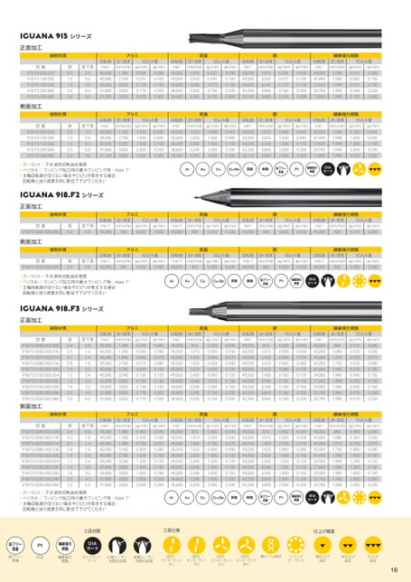

Iguana915シリーズ正面加工被削材質アルミ真鍮型番915.F3.050.025915.F3.100.050915.F3.150.050915.F3.200.060915.F3.300.090側面加工被削材質型番915.F3.050.025915.F3.100.050915.F3.150.050915.F3.200.060915.F3.300.090径0.51.01.52.03.0径0.51.01.52.03.0首下長2.55.05.06.09.0回転数min-145,00045,00042,40031,80021,200送り速度mm/min1,3502,7003,8203,8203,820切込み量apmm0.0380.0760.1280.1700.255aemm0.0500.1000.1500.2000.300回転数min-145,00045,00045,00036,60024,400送り速度mm/min1,0102,0203,0403,2903,290切込み量apmm0.0220.0450.0750.1000.150aemm0.0500.1000.1500.2000.300回転数min-145,00045,00045,00042,20028,100アルミ真鍮首下長2.55.05.06.09.0回転数min-145,00045,00042,40031,80021,200送り速度mm/min1,3502,7003,8203,8203,820切込み量apmm0.5001.0001.5002.0003.000aemm0.0450.0900.1500.2000.300回転数min-145,00045,00045,00036,60024,400送り速度mm/min1,0102,0203,0403,2903,290切込み量apmm0.5001.0001.5002.0003.000aemm0.0450.0900.1500.2000.300回転数min-145,00045,00045,00042,20028,100銅送り速度mm/min1,0102,0203,0403,8003,800銅送り速度mm/min1,0102,0203,0403,8003,800繊維強化樹脂切込み量apmm0.0360.0720.1200.1600.240aemm0.0500.1000.1500.2000.300回転数min-145,00041,40027,60020,70013,800送り速度mm/min1,0801,9901,9901,9901,990切込み量apmm0.0150.0300.0510.0680.102aemm0.0500.1000.1500.2000.300繊維強化樹脂切込み量apmm0.5001.0001.5002.0003.000aemm0.0450.0900.1500.2000.300回転数min-145,00041,40027,60020,70013,800送り速度mm/min1,0801,9901,9901,9901,990切込み量apmm0.5001.0001.5002.0003.000aemm0.0450.0900.1500.2000.300クーラント:不水溶性切削油を推奨ヘリカル/ランピング加工時の最大ランピング角:max1°主軸回転数が足りない場合やビビりが発生する場合:回転数と送り速度を同じ割合で下げてくださいIguana918.F2シリーズ正面加工AlAuCuCu-Be真鍮樹脂鉛フリー真鍮Pt繊維強化樹脂DIAコート被削材質アルミ真鍮銅繊維強化樹脂型番918.F2.0030.000.006径0.3首下長0.6回転数min-145,000送り速度mm/min540切込み量apmm0.030aemm0.030回転数min-145,000送り速度mm/min400切込み量apmm0.010aemm0.030回転数min-145,000送り速度mm/min400切込み量apmm0.020aemm0.030回転数min-145,000送り速度mm/min430切込み量apmm0.010aemm0.030側面加工被削材質アルミ真鍮銅繊維強化樹脂型番918.F2.0030.000.006径0.3首下長0.6回転数min-145,000送り速度mm/min540切込み量apmm0.300aemm0.030回転数min-145,000送り速度mm/min400切込み量apmm0.300aemm0.030回転数min-145,000送り速度mm/min400切込み量apmm0.300aemm0.030回転数min-145,000送り速度mm/min430切込み量apmm0.300aemm0.030クーラント:不水溶性切削油を推奨ヘリカル/ランピング加工時の最大ランピング角:max1°主軸回転数が足りない場合やビビりが発生する場合:回転数と送り速度を同じ割合で下げてくださいIguana918.F3シリーズ正面加工被削材質アルミ型番918.F3.0040.000.008918.F3.0050.000.010918.F3.0070.000.014918.F3.0080.000.016918.F3.0100.000.020918.F3.0120.000.024918.F3.0150.000.030918.F3.0160.000.030918.F3.0200.000.040918.F3.0200.000.060側面加工径0.40.50.70.81.01.21.51.62.02.0首下長0.81.01.41.62.02.43.03.24.06.0回転数min-145,00045,00045,00045,00045,00045,00042,40039,80031,80031,800送り速度mm/min1,0801,3501,8902,1602,7003,2403,8203,8203,8203,820切込み量apmm0.0300.0400.0600.0700.0900.1000.1300.1400.1700.170aemm0.0400.0500.0700.0800.1000.1200.1500.1600.2000.200被削材質アルミ型番首下長送り速度mm/min回転数min-145,00045,00045,00045,00045,00045,00042,40039,80031,80031,800径0.40.50.70.81.01.21.51.62.02.0918.F3.0040.000.008918.F3.0050.000.010918.F3.0070.000.014918.F3.0080.000.016918.F3.0100.000.020918.F3.0120.000.024918.F3.0150.000.030918.F3.0160.000.030918.F3.0200.000.040918.F3.0200.000.060クーラント:不水溶性切削油を推奨ヘリカル/ランピング加工時の最大ランピング角:max1°主軸回転数が足りない場合やビビりが発生する場合:回転数と送り速度を同じ割合で下げてください1,0801,3501,8902,1602,7003,2403,8203,8203,8203,8200.81.01.41.62.02.43.03.24.06.0切込み量apmm0.4000.5000.7000.8001.0001.2001.5001.6002.0002.000aemm0.0400.0500.0700.0800.1000.1200.1500.1600.2000.200AlAuCuCu-Be真鍮樹脂鉛フリー真鍮Pt繊維強化樹脂DIAコート真鍮送り速度mm/min8101,0101,4201,6202,0202,4303,0403,2403,2903,290切込み量apmm0.0200.0300.0400.0400.0500.0600.0700.0800.1000.100aemm0.0400.0500.0700.0800.1000.1200.1500.1600.2000.200真鍮送り速度mm/min8101,0101,4201,6202,0202,4303,0403,2403,2903,290切込み量apmm0.4000.5000.7000.8001.0001.2001.5001.6002.0002.000aemm0.0400.0500.0700.0800.1000.1200.1500.1600.2000.200回転数min-145,00045,00045,00045,00045,00045,00045,00045,00036,60036,600回転数min-145,00045,00045,00045,00045,00045,00045,00045,00036,60036,600銅送り速度mm/min8101,0101,4201,6202,0202,4303,0403,2403,8003,800銅送り速度mm/min8101,0101,4201,6202,0202,4303,0403,2403,8003,800切込み量apmm0.0300.0400.0600.0600.0800.1000.1200.1300.1600.160aemm0.0400.0500.0700.0800.1000.1200.1500.1600.2000.200切込み量apmm0.4000.5000.7000.8001.0001.2001.5001.6002.0002.000aemm0.0400.0500.0700.0800.1000.1200.1500.1600.2000.200回転数min-145,00045,00045,00045,00045,00045,00045,00045,00042,20042,200回転数min-145,00045,00045,00045,00045,00045,00045,00045,00042,20042,200繊維強化樹脂送り速度mm/min8601,0801,5101,7301,9901,9901,9901,9901,9901,990切込み量apmm0.0100.0200.0200.0300.0300.0400.0500.0500.0700.070aemm0.0400.0500.0700.0800.1000.1200.1500.1600.2000.200繊維強化樹脂送り速度mm/min8601,0801,5101,7301,9901,9901,9901,9901,9901,990切込み量apmm0.4000.5000.7000.8001.0001.2001.5001.6002.0002.000aemm0.0400.0500.0700.0800.1000.1200.1500.1600.2000.200回転数min-145,00045,00045,00045,00041,40034,50027,60025,90020,70020,700回転数min-145,00045,00045,00045,00041,40034,50027,60025,90020,70020,700AlAuCuCu-Be真鍮樹脂鉛フリー真鍮Pt繊維強化樹脂DIAコート鉛フリー真鍮鉛フリー真鍮Pt白金繊維強化樹脂繊維強化樹脂工具材質DIAコートダイヤモンドコート片面レーザー先鋭化処理両面レーザー先鋭化処理工具仕様仕上げ精度センターカットセンターカットセンターカットセンターカット2枚刃なし2枚刃あり3枚刃3枚刃なしあり強ネジレ形状シャンククーラント粗仕上げ品位中仕上げ品位仕上げ品位16
